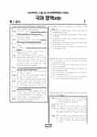

문제지


시험지를 먼저 풀어 보세요. 등급컷·표준점수·난이도는 흐리게 가려 뒀어요.
시험지를 먼저 풀어 보세요. 점수와 인원 수치는 흐리게 가려 뒀어요.
EBSi 응답자 기준으로 가장 많이 틀린 문항은 13번(3점)이고, 오답률은 73%입니다. 상위 15문항 중 1문항은 정답보다 한 오답을 고른 사람이 더 많았습니다(13번: 정답 ① 27.1%, ④ 34.1%). 오답률 50%를 넘은 문항은 6개입니다.
| 순위 | 문항 | 배점 | 오답률 | 정답 | 많이 고른 오답 |
|---|---|---|---|---|---|
| 1 | 13번 | 3점 | 73% | ① | ④ 34.1% |
| 2 | 14번 | 2점 | 66.7% | ④ | ③ 20.7% |
| 3 | 12번 | 2점 | 61% | ④ | ③ 30.8% |
| 4 | 42번 | 3점 | 55.7% | ② | ⑤ 18.4% |
| 5 | 20번 | 3점 | 53.3% | ④ | ⑤ 21.2% |
| 6 | 45번 | 2점 | 52.9% | ① | ③ 14.4% |
| 7 | 28번 | 2점 | 48.8% | ③ | ⑤ 20.5% |
| 8 | 27번 | 2점 | 47.2% | ⑤ | ② 16% |
| 9 | 22번 | 3점 | 47.1% | ① | ③ 18.7% |
| 10 | 32번 | 2점 | 46.6% | ③ | ② 16.2% |
| 11 | 15번 | 2점 | 45.2% | ④ | ① 12.9% |
| 12 | 7번 | 3점 | 41.5% | ⑤ | ③ 14.1% |
| 13 | 43번 | 2점 | 40.2% | ② | ① 13.7% |
| 14 | 29번 | 3점 | 40.1% | ② | ① 12.3% |
| 15 | 40번 | 2점 | 39.3% | ③ | ② 12.5% |
EBSi 가채점 응답자 기준 · 전 문항 중 오답률 상위 15문항
출처: EBSi 역대 등급컷·오답률 공개 화면. 가채점에 참여한 EBSi 이용자 응답이라 전체 응시자 정답률과는 다를 수 있습니다.
발행 기관: 시·도교육청(전국연합학력평가). 파일 위치: 이 사이트가 보관한 사본. 저작권은 발행 기관에 있습니다. 원본과 다르거나 게시 중단이 필요하면 연락처로 알려 주세요. 등급컷 출처 구분은 데이터 원칙에서 설명합니다.
국어 A형은 EBSi 가채점 응답자 기준 오답률 50%를 넘은 문항이 6개였고, 가장 많이 틀린 세 문항이 모두 문법이었습니다. 13번(3점, 73.0%)은 '엄마와 그녀는 닮았다'처럼 빠지면 문장이 성립하지 않는 부사어 등 <보기>의 예로 부사어의 특징을 탐구하는 문항으로 응답의 34.1%가 같은 오답(4번)을 골랐습니다. 높임 표현 학습 활동 14번(66.7%), 의존명사 '이' 등의 사전 풀이를 활용하는 12번(61.0%, 같은 오답 30.8%)이 뒤를 이었습니다.
조선 후기 가정소설의 초월계 개입을 <보기>로 「월영낭자전」을 이해하는 42번(55.7%), 철 흡수 과정 [A]를 그림으로 나타낸 <보기>의 엔도솜 등을 이해하는 20번(53.3%), 「북어 대가리」 45번(52.9%)도 50%를 넘었습니다.
16~17번은 르네상스의 이상화된 인간상을 거부하고 세속적이고 현실감 넘치는 인물을 그린 바로크 화가 카라바지오를, 18~20번은 헤모글로빈과 미오글로빈의 필수 성분인 철을 몸이 흡수하고 일정하게 유지하는 과정을 다뤘습니다. 21~24번은 같은 종목의 다른 선수보다 높은 유명 선수의 연봉을 경제적 지대로 설명했습니다.
25~27번은 원환적 시간인 크로노스적 시간과 직선적 시간인 카이로스적 시간이 삶의 방식에 따라 달라진다는 글, 28~30번은 안경 렌즈나 스마트폰 터치 화면의 박막을 만드는 진공 증착 기술이었습니다.
문학은 '내 마음은 한 폭의 기'로 시작하는 김남조 「정념의 기」(31~33번), 충효와 강호 사이에서 갈등하는 권호문 「한거십팔곡」(34~36번), 현상금이 걸린 은행 강도의 인상착의가 실종된 삼촌과 비슷하다는 이유로 마을 사람들이 '우리 집'을 감시하는 한수산 「밤길」(37~39번), 후처 정씨의 모해를 받는 호월영의 「월영낭자전」(40~43번), 잔소리가 부쩍 심해진 자앙과 기임이 나오는 이강백 「북어 대가리」(44~45번)였습니다.
화법·작문은 힘없는 목소리로 인사하는 학생 민지와 선생님의 대화(1~2번), 소방서 대원의 심폐소생술 강연(4~5번), 장애인 셔틀 버스의 운영 개선을 시청에 건의하는 글(6~7번), 뮤지컬 '지켜주세요' 관람 소개 글(9~10번)이었습니다.